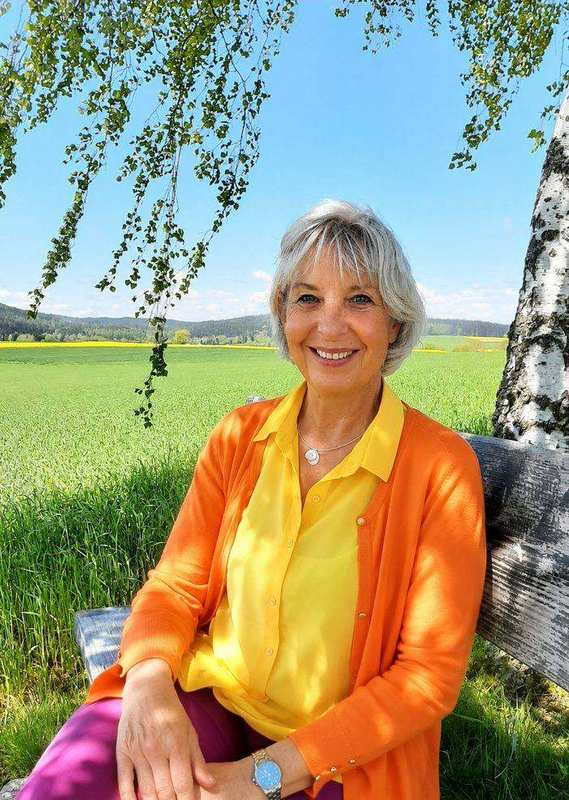

Du funktionierst. Aber lebst du auch?
Du funktionierst nur noch. Für die Kollegen, für die Familie, für alle – nur nicht für dich. Und irgendwann merkst du: Die Ideen sind weg, die Energie ist weg, und du fühlst dich einfach nur noch leer.
Kämpf nicht gegen den Verlust. Verändere das Denken, das ihn erschafft.
Es geht nicht darum, noch mehr zu leisten. Es geht darum, wieder zu spüren, wer du bist – jenseits von Funktionieren und Erwartungen.
Neugierig auf mehr Klarheit?
Deine 7-Tage-Entdeckungsreise
Deine 7-Tage-Entdeckungsreise ist dein täglicher Wegbegleiter zurück zu dir selbst. Schritt für Schritt erkennst du deine inneren Glaubenssätze, wandelst sie ins Positive – und ordnest ihnen sogar eine Farbe zu, die dir neue Energie und Ausstrahlung schenkt. Kein Programm, das dich verändern will – ein Weg, der dir hilft, dich wieder zu erkennen. Am Ende der 7 Tage kennst du nicht nur deine Muster. Du weißt wieder, wofür du brennst.
7 Tage, ein Weg
Jeden Tag eine kurze Reflexion, ehrliche Fragen und deine persönliche Kraft-Farbe.
Das gewinnst du
- ✓ Klarheit darüber, was dich wirklich erschöpft – und was dir wirklich Kraft gibt
- ✓ Sicherheit, dich auf dich selbst verlassen zu können
- ✓ Das Vertrauen, dass du okay bist, wie du bist
- ✓ Ein Gefühl von innerer Ruhe, das bleibt, auch wenn der Alltag laut wird
- ✓ Mehr mentale Stärke, die dich dauerhaft trägt
- ✓ Den Mut, wieder Ja zu dir selbst zu sagen
Über mich
Ich bin Marianne Bauer – und ich kenne das Gefühl, nur noch zu funktionieren, aus eigener Erfahrung. Auch ich war einmal müde, unsicher und auf der Suche nach Halt, bis mir an einem tiefen Punkt klar wurde: Ich selbst trage die Verantwortung für mein Leben. Diese Erkenntnis hat alles verändert.
Aus eigener Erfahrung weiß ich: In jedem Menschen schlummern mentale Stärken, die nur darauf warten, geweckt zu werden. Das ist der wertvollste Tipp, den ich dir mit auf den Weg geben kann – und genau das möchte ich gemeinsam mit dir entdecken.
„Du hast das Recht, glücklich zu sein.“
Heute begleite ich Frauen wie dich mit meiner besonderen Fähigkeit, den Charakter eines Menschen zu erkennen, und mit der Farbensprache – authentisch, ehrlich und ohne Perfektion. Zuhause bin ich im Fichtelgebirge, zwischen Hof, Selb und Wunsiedel.
Ja – ich kenne das Gefühl, innerlich leer zu sein, kurz vor dem letzten Rest Akku. Auf die falschen Menschen gehofft, falsche Unterstützung erfahren. All das trägst du unsichtbar in deinem Lebensrucksack.

Mit innerer Ruhe traf ich eine klare Entscheidung: eine neue Denkstruktur aufzubauen. Ich trage die Verantwortung für mein Leben – und darf einfach authentisch ich selbst sein.
Selbstbewusster, glücklicher, klarer und zielbewusster als je zuvor. Meine ganz besondere Geschichte über Friedolin – meinen Lebensrucksack, der mich heute als wertvoller Freund begleitet, voller Lebensqualität in allen Bereichen.
Wer nach Gold sucht, muss schürfen – wer gewinnen will, muss anfangen. Ran an den Speck: Jetzt ist deine Zeit, für deine Träume.
Du hast ein Recht auf dein Leben.
Veränderung beginnt im Kopf – Freiheit entsteht im Herzen! Und zwischen den Ohren beginnt dein Leben.
Du bist nicht allein damit
„Eine Last wurde mir von den Schultern genommen. Ich weiß jetzt: Ich bin okay, wie ich bin – und ich bin nicht allein.“
Persönlich begleitet im Fichtelgebirge · Hof · Selb · Bayern · Oberfranken · Wunsiedel
So ist es mir selbst auch ergangen. Deshalb weiß ich, wie wertvoll es ist, nicht allein zu sein – und genau deshalb reiche ich dir meine Hand.
„Liebe Marianne, es ist wirklich schön, solche Worte zu hören. Man merkt in jeder Zeile, wie du dein Herz, Wertschätzung und positive Energie in deine Arbeit steckst. Genau das macht dich als Mensch aus.“
„Die Arbeit mit Marianne beruht auf einer vertrauensvollen und wertschätzenden Atmosphäre. Ihr Ansatz ist stets am Thema orientiert, dabei kreativ und situativ. Von Anfang an hat Marianne eine Leichtigkeit in unsere Zusammenarbeit gebracht, die das halbe Jahr wie im Flug vorbeiziehen ließ.“
Nach den 7 Tagen: Deine Fragen, ehrlich beantwortet
Wie finde ich wieder Klarheit und Energie?+
Mit kleinen, ehrlichen Schritten statt großen Programmen – genau das leistet deine 7-Tage-Entdeckungsreise: Tag für Tag blickst du auf das, was dich wirklich beschäftigt, und gewinnst so neue Klarheit.
Wie werde ich selbstsicherer und mutiger?+
Indem du deine inneren Glaubenssätze erkennst und bewusst veränderst. Sobald du siehst, welche Gedanken dich zurückhalten, kannst du ihnen etwas Stärkendes entgegensetzen.
Wie komme ich raus aus der Erschöpfung?+
Erschöpfung entsteht oft, weil wir ständig für andere da sind und uns selbst vergessen. Das Journal schenkt dir 7 Tage lang bewusst Zeit für dich – der erste Schritt zurück zu deiner Energie.
Für wen ist die 7-Tage-Entdeckungsreise geeignet?+
Für Frauen im sozialen Bereich oder als Unternehmerin, die viel für andere da sind und langsam wieder zu sich selbst finden möchten – ganz ohne Vorerfahrung mit Journaling.